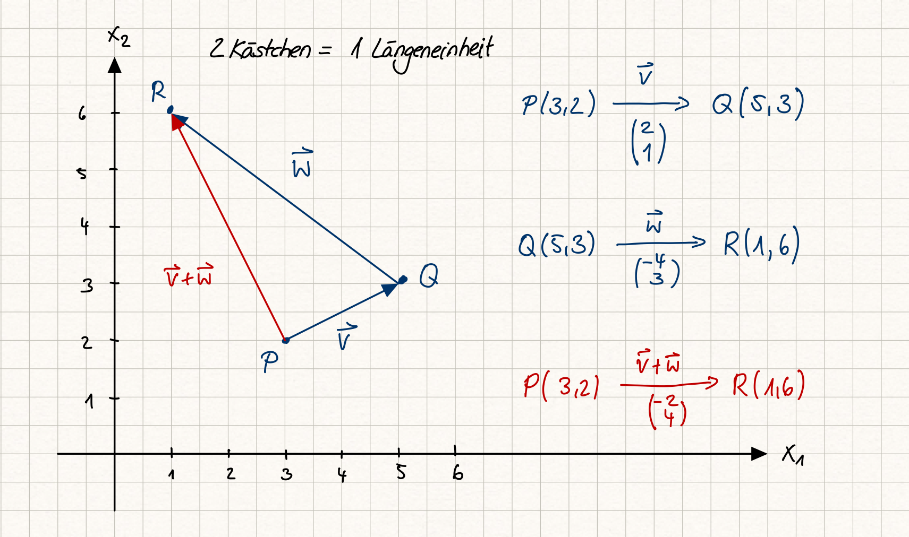

3.4 Affine Punkträume#
Nachdem wir gelernt haben, wie Punkte bezüglich eines Koordinatensystems durch n-Tupel und Verschiebungen als Vektoren beschrieben werden können, kombinieren wir nun beides und führen den sogenannten affinen Punktraum ein.
Lernziele#
Lernziele
Sie können die Definition eines affinen Punktraumes auswendig.
Sie wissen, wie Punkte und Verschiebungsvektoren im \(\mathbb{R}^n\) über die Punkt-Vektoraddition zu einem affinen Punktraum kombiniert werden können.
Affiner Punktraum#
Erste Zutat eines affinen Punktraumes ist eine nichtleere Menge \(A\), deren Elemente wir Punkte nennen. Zweite Zutat ist ein reeller Vektorraum \(V\) mit der Verknüpfung \(\oplus: V\times V\to V\) (bzw. ein allgemeiner Vektorraum über einem beliebigen Körper). Darüber hinaus setzen wir voraus, dass es eine weitere Verknüpfung \(\boxplus: A\times V \to A\) gibt. Wir nennen das Tripel \((V,A,\boxplus)\) affinen Punktraum, wenn gilt:
Für alle Punkte \(P \in A\) gilt \(P \boxplus \vec{0} = P\).
Für jeden Punkt \(P\in A\) und \(Q\in A\) existiert genau ein Vektor \(v\in V\) mit \(P\boxplus\vec{v}=Q\).
Für alle Punkte \(P\in A\) und Vektoren \(\vec{v}, \vec{w}\in V\) gilt \(P\boxplus (\vec{v}\oplus\vec{w}) = (P\boxplus \vec{v})\boxplus\vec{w}\).
Bemerkung: Üblicherweise werden die Verknüpfungen \(\boxplus: A \times V \to A\) und \(\oplus: V \times V \to V\) nur mit einem einfachen Pluszeichen \(+\) geschrieben, da ja aus dem Zusammenhang klar ist, welche Verknüpfung gemeint ist.
In der »lässigeren« Schreibweise mit dem \(+\) als Symbol für die Verknüpfung lässt sich der Begriff affiner Punktraum also folgendermaßen definieren.
Was ist … ein affiner Punktraum?
Eine nichtleere Menge \(A\) mit einem Vektorraum \(V\) und einer Verknüpfung \(+: A\times V \to A\) wird affiner Punktraum genannt, wenn folgende Eigenschaften erfüllt sind:
Für alle Punkte \(P \in A\) gilt \(P + \vec{0} = P\).
Für jeden Punkt \(P\in A\) und \(Q\in A\) existiert genau ein Vektor \(v\in V\) mit \(P + \vec{v} = Q\).
Für alle Punkte \(P\in A\) und Vektoren \(\vec{v}, \vec{w}\in V\) gilt \(P+ (\vec{v}+\vec{w}) = (P+ \vec{v})+\vec{w}\).
Gemäß Regel Nr. 2 wird existiert für jeden Punkt \(P\in A\) und \(Q\in A\) genau ein Vektor \(v \in V\), so dass \(P + \vec{v} = Q\) gilt. Häufig wird dieser Vektor \(\vec{v}\) auch mit der Notation \(\overrightarrow{PQ}\) bezeichnet und Verbindungsvektor zwischen dem Punkt \(P\) und dem Punkt \(Q\) genannt.
Außerdem gilt dann auch
Affine Punkträume zur Beschreibung geometrischer Probleme in der Ebene (2D)#
Nachdem wir nun das mathematische Rüstzeug haben, können wir Punkte (Positionen) und Verschiebungen (Bewegungen) miteinander kombinieren, um geometrische Probleme präzise zu beschreiben und sie zu lösen.
Sobald wir für unsere Menge der Punkte ein Koordinatensystem gewählt haben, können wir die Position der Punkte als n-Tupel angeben. Wir beginnen mit dem zweidimensionalen Raum \(A=\mathbb{R}^2\). Zweckmäßigerweise verwenden wir für das 2-Tupel der Koordinaten eines Punktes \(P\in\mathbb{R}^2\) einen Spaltenvektor
Die Verknüpfung \(+: \mathbb{R}^2 \times V \to \mathbb{R}^2\) definieren wir als komponentenweise Addition, also für einen Punkt \(S\in\mathbb{R}^2\) und einen zweidimensionalen Verschiebungsvektor \(\vec{v}\) als
Das Ergebnis ist der Punkt \(Q\in\mathbb{R}^2\) mit den Koordinaten \(Q_1\) und \(Q_2\).
Achtung: auf den ersten Blick könnte man meinen, dass zwei Vektoren addiert werden und das Ergebnis auf der rechten Seite ein Vektor ist. Trotz der einheitlichen Schreibweise, die schnelleres Rechnen ermöglichen soll, handelt es sich dennoch um zwei unterschiedliche Objekte Punkt und Verschiebung (oder physikalisch ausgedrückt um Ort und Bewegung).
Wir fragen uns, ob die so definierte Punkt-Vektor-Addition zusammen mit der Menge der Punkte \(\mathbb{R}^2\) und dem Vektorraum der Verschiebungen einen affinen Punktraum bildet. Dazu müssen wir die drei Eigenschaften nachrechnen.
Eigenschaft 1 ist geometrisch und arithmetisch erfüllt. Wenn wir die Verschiebung
auf den geometrisch auf den Punkt \(P\) anwenden, bewegen wir uns nicht und erhalten als Ergebnis wiederum \(P\). Also gilt \(P + \vec{0} = P\). Arithmetisch erhalten wir dasselbe Ergebnis, denn es gilt
Eigenschaft 2 gilt auch. Wenn wir nämlich den Verbindunsvektor \(\vec{v}\) als
definieren, gilt mit der Punkt-Vektor-Addition
oder anders ausgedrückt \(P + \vec{v} = Q\).
Bleibt noch die letzte Eigenschaft. Dazu betrachten wir eine Skizze.


Fig. 8 Beispiel zur 3. Eigenschaft von affinen Punkträumen am Beispiel vom \(\mathbb{R}^2\); Quelle: eigene Darstellung; Lizenz: CC BY-SA 4.0#
Geometrisch bedeutet \(P+ (\vec{v}+\vec{w})\), dass ich erst die beiden Verschiebungen hintereinander ausführe und so zur rot gezeichneten Verschiebung \((-2,4)\) komme. Wird der Punkt \(P\) dann um \((-2,4)\) verschoben, landen wir bei \(R(1,6)\). Die linke Seite ergibt arithmetisch
Jetzt betrachten wir die rechte Seite. Verschieben wir zunächst den Punkt \(P(3,2)\) um \(\vec{v}\), landen wir bei \(Q(5,3)\). Nun wenden wir die zweite Verschiebung \(\vec{w}\) an und enden ebenfalls bei \(R(1,6)\). Das ist auch arithmetisch erfüllt:
Die Überlegungen wurden hier für ein konkretes Beispiel durchgeführt. Um zu zeigen, dass die Punkt-Vektor-Addition tatsächlich die 3. Eigenschaft eines affinen Punktraumes erfüllt, müssen wir das allgemein zeigen.
Allgemein lautet die linke Seite
Die rechte Seite lautet
Beide Seiten sind gleich, was durch das Assoziativgesetz der skalaren Addition bedingt ist. Somit ist auch die 3. Eigenschaft des affinen Punktraumes erfüllt.
Affine Punkträume im \(\mathbb{R}^n\)#
Die oben gezeigten Überlegungen lassen sich einfach auf den n-dimensionalen Raum \(\mathbb{R}^n\) übertragen. Wir stellen Punkte als n-Tupel im kartesischen Koordinatensystem dar:
Verschiebungen beschreiben wir ebenfalls als n-Tupel mit der üblichen Vektoraddition und Skalarmultiplikation des reellen Standardvektorraumes. Wir verwenden ebenfalls die Notation als Spaltenvektor, also
Zusätzlich definieren wir eine n-dimensionale Punkt-Vektor-Addition \(+: \mathbb{R}^n \times \mathbb{R}^n \to \mathbb{R}^n\) als komponentenweise Addition in den reellen Zahlen, also als
Der Nachweis der drei Eigenschaften eines affinen Punktraumes erfolgt dabei wie im zweidimensionalen Fall.
Zusammenfassung und Ausblick#
Mit Hilfe des mathematischen Konzepts der affinen Punkträume können wir nun geometrische Probleme algebraisch beschreiben. In den nächsten Kapiteln werden sehen, wie geometrische Probleme dadurch einfacher gelöst werden können.